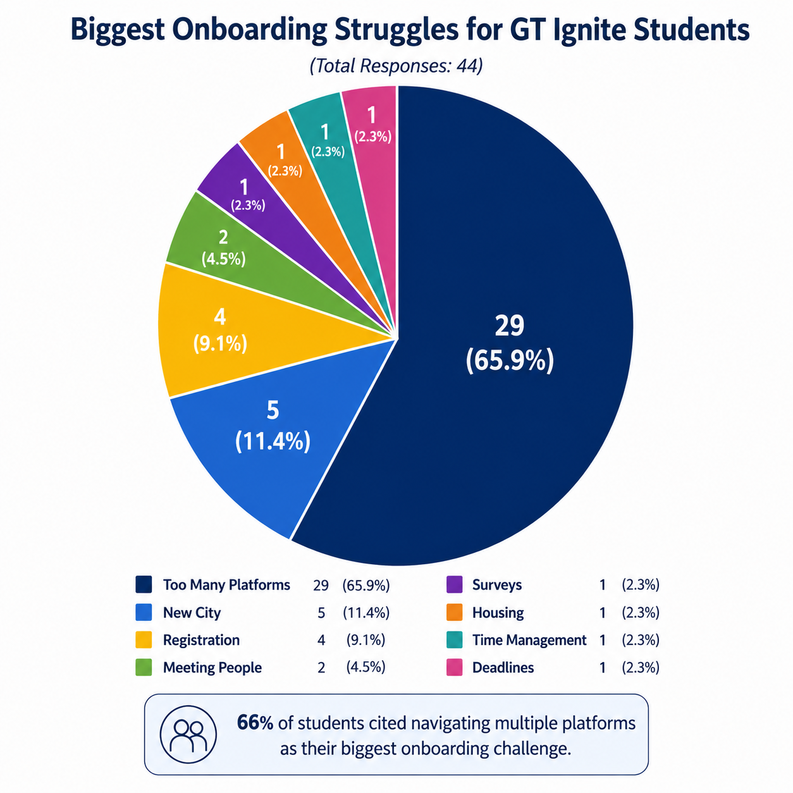

An onboarding portal that pulls the tasks, resources, and information new Georgia Tech students need out of scattered emails and platforms and puts them in one place they can follow.
Portal demo. This walkthrough shows the onboarding portal our team built during the hackathon. It collects the required tasks and resources new Georgia Tech students are handed across different systems and presents them as a single, ordered checklist, so the first few weeks are easier to follow and less overwhelming.

Onboarding survey. I ran a short survey to find out what new students struggle with most when they arrive. The responses gave us real needs to design against instead of guesses, and we used them to decide what the portal should surface first.
New Georgia Tech students have to track required tasks and resources spread across many platforms and emails during their first weeks.
Work with a team to design an onboarding portal that brings everything an incoming student needs into one place, within a hackathon weekend.
I ran the onboarding survey, helped shape the user flow from those findings, and used Claude to speed up brainstorming and planning while we worked against the clock.
A working portal that turns fragmented onboarding information into one student-friendly checklist, backed by what students told us they needed.
- 🚀 Built as a team over a hackathon weekend
- 📊 Ran a survey to learn what new students actually struggle with
- 🧭 Brings scattered onboarding steps into one ordered flow
- 🤖 Used Claude to speed up brainstorming and planning